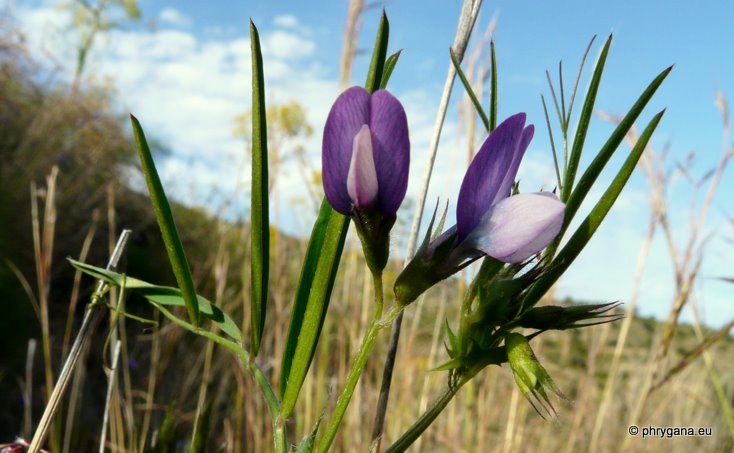
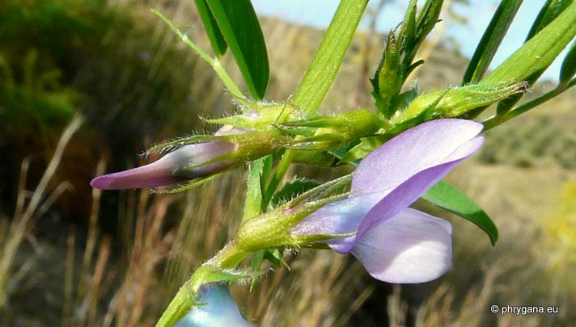
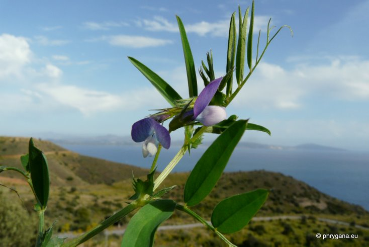
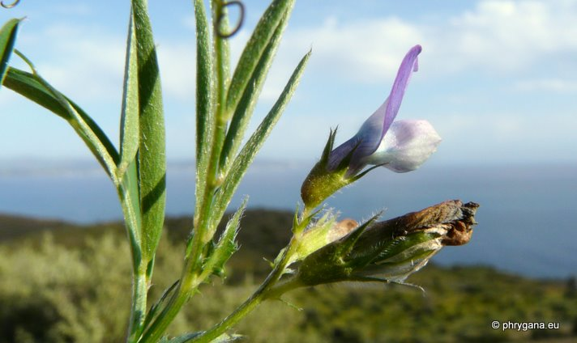
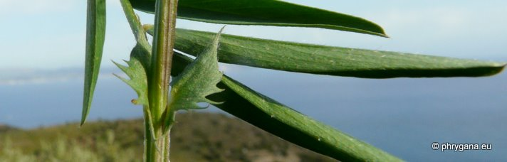
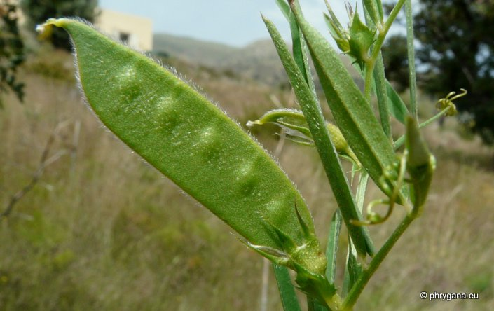
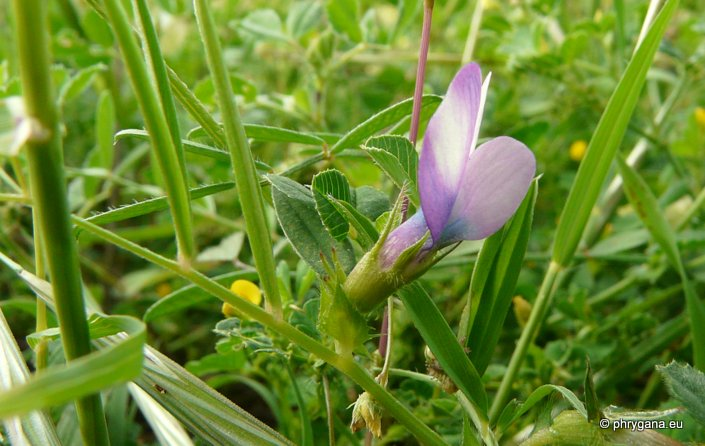
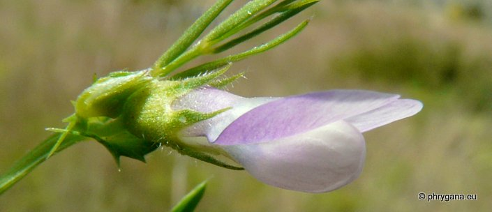

| PHRYGANA | Fauna | Flora | Galles | liste des espèces |
contact -
info - commentaires phrygana1 (at) gmail.com |
| Particularités crétoises | nouveautés | Mines | ressources naturelles |
| Vicia bithynica (L.) L. |
| 259 | Flora | FABACEAE LINDL. | Vicieae | Vicia L. |
|
 Vicia bithynica Agios Giorgos (Melambes) 15 avril 2011 |
| la Vesce de Bithynie -- Bithynian Vetch -- Bithynische wikke -- Bithynische Wicke | |
| Plante rampante-ascendante à tige peu épaisse (5 mm), ressemblant à un Lathyrus sp. | |
| Feuilles: composées paripennées ( 3 - 6 paires de folioles oblongues à lancéolées, pointues, entières, les feuilles inférieures étant un peu plus petites; vrilles rameuses; stipules assez grandes, découpées-incisées | |
| Fleurs: en petites grappes (1 - 3), bicolores (étendard lilas pourpré, ailes et carène souvent blanchâtres); corolle longue de 16 - 20 mm; pédoncule 10 - 30 mm de long; dents du calices longues, égales, pointues, plus longues que le tube | |
| Fruit: une gousse jaunâtre, poilue, longue de 25 à 35 mm x 7 - 10 mm, oblongue-rhomboidale; 2 à 7 graines globuleuses | |
| Hauteur: 20 - 60 cm | Type biologique: thérophyte ramifié |
| Floraison: mars avril mai | |
| Altitudes: 0 - 500 m | |
| Statut en Crète: indigène -- native | |
| Biotopes en Crète: pelouses, fossés, lieux rocheux, champs abandonnés, bords de chemins, terrains vagues. | |
| Distribution: région Méditerranéenne, Caucase, Pakistan, Proche-Orient | |
| Espèce héliophile | |
|
 Vicia bithynica Agios Giorgos (Melambes) 15 avril 2011 |
|
 Vicia bithynica Agios Giorgos (Melambes) 15 avril 2011 |
|
 Vicia bithynica Agios Giorgos (Melambes) 15 avril 2011 |
|
 Vicia bithynica Agios Giorgos (Melambes) 15 avril 2011 |
|
 Vicia bithynica Agios Giorgos (Melambes) 13 avril 2012 |
|
 Vicia bithynica Agios Giorgos (Melambes) 13 avril 2012 |
|
 Vicia bithynica Agios Giorgos (Melambes) 13 avril 2012 |
| 07 octobre 2012 |
| © paul fontaine -- © Phrygana.eu 2007 -- 2013 |